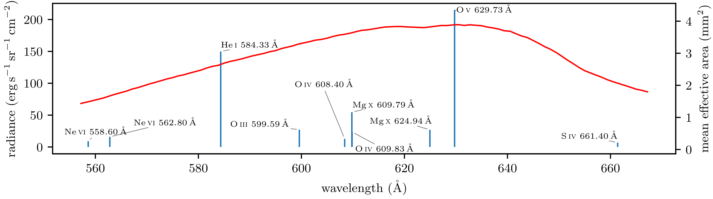

Interface Region Imaging Spectograph (IRIS) Si IV 1394 A
On the left is an example of a deep IRIS raster of the Si IV 1394 Angstrom line in quiet sun conditions near disk center.
This 3D raster is displayed as a 2D false-color image by integrating each line profile against the response of our eyes to the primary colors in our RGB displays.
Colorizing profiles in this way displays a typical profile as pure green, Doppler-shifted profiles as red or blue, and broadened profiles as white or pink.
Looking carefully at this IRIS raster, we can see many small regions of red and blue at arcsecond scales.

If we look at the line profile of one of these events, we can see that the spectrum of this profile is very broad and bright compared to the median line profile, plotted here in orange, and has supersonic red and blueshifted components.
This is an example of a quiet sun transition region explosive event or TREE, which are small, transient events with significant emission in the wings of TR emission lines.
TREEs are thought to be an observational signature of bidirectional jets formed due to magnetic reconnection, but studying the small-scale spatial dynamics of these events using rastering slit spectrographs, such as IRIS, is limited by the intrinsic tradeoff between FOV and cadence of these instruments.


To get a better understanding of these events, we have developed and flown ESIS, which is an instrument composed of four independent slitless spectrographs, each with a different dispersion direction.
ESIS is designed to primarily observe the O V 630 angstrom line, which is a bright, isolated transition region line formed at about 250,000 K.
On the left is an animation which shows the IRIS raster we considered earlier, shifted and scaled to simulate the brightness and width of the O V line, and then passed through the ESIS forward model.
This demonstrates how the dispersion in each channel spreads the spectrum in a different direction.
Of course, ESIS can’t see these colors directly, what it really sees are these four grayscale images.
The goal of ESIS data analysis is then to invert these four images to recover the corresponding spatial-spectral cube.
Successfully inverting these images allows us to measure the profiles of a few emission lines with high spatial, spectral, and temporal resolution over a wide field of view.



On the top is the spectrum of the ESIS passband which runs from about 560 to 660 angstroms.
Here, we’ve plotted the ten brightest spectral lines in the passband, and of note is the O V 630 A line I mentioned before, as well as two O IV lines at 609 and 608, an O III line at 600, a He I line at 584, and two Mg X lines at 610 and 625 Angstroms.
On the bottom left are the same lines as they would appear on the ESIS detector.
ESIS has an octagonal field stop, so each ESIS image is composed of many overlapping octagons from the different emission lines within the passband.
These types of images are often called overlappograms, the only difference with ESIS is that it measures four overlappograms per exposure.
On the right is a schematic showing how each of these overlappograms is oriented around the field stop in 45 degree increments.